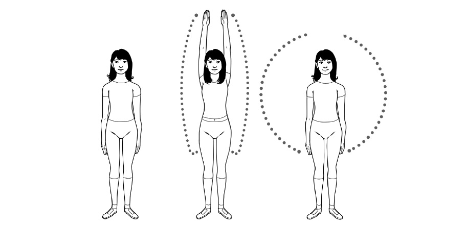

these disciplines, feel free to choose a practice that you love and that makes you
move.
In the following pages we’ll take a look at some of the practices that promote health and longevity—but first, a little appetizer: a singularly Japanese exercise
for starting your day.
Radio taiso
This morning warm-up has been around since before World War II. The “radio”
part of its name is from when the instructions for each exercise were transmitted
over the radio, but today people usually do these movements while tuned to a
television channel or Internet video demonstrating the steps.
One of the main purposes of doing radio taiso is to promote a spirit of unity among participants. The exercises are always done in groups, usually in schools
before the start of classes, and in businesses before the workday begins.
Statistics show that 30 percent of Japanese practice radio taiso for a few minutes every morning, but radio taiso is one thing that almost everyone we
interviewed in Ogimi had in common. Even the residents of the nursing home we
visited dedicated at least five minutes every day to it, though some did the
exercises from their wheelchairs. We joined them on their daily practice and we
felt refreshed for the rest of the day.
When these exercises are done in a group, it is usually on a sports field or in a large reception hall, and typically involves some kind of loudspeaker.
The exercises take five or ten minutes, depending on whether you do all or only some of them. They focus on dynamic stretching and increasing joint
mobility. One of the most iconic radio taiso exercises consists of simply raising mobility. One of the most iconic radio taiso exercises consists of simply raising your arms above your head and then bringing them down in a circular motion. It
is a tool to wake up the body, an easy mobility workout that is low in intensity
and that focuses on exercising as many joints as possible.
It might seem basic, but in our modern lives, we can spend days without raising our arms above our ears. Think about it: our arms are down when using
computers, when using smartphones, when reading books. One of the few times
we raise our hands over our heads is when reaching for something in a cupboard
or closet, while our ancestors were raising their hands over their heads all the
time when gathering things from trees. Radio taiso helps us to practice all the
basic movements of the body.

Basic version of the radio taiso exercises (5 minutes).